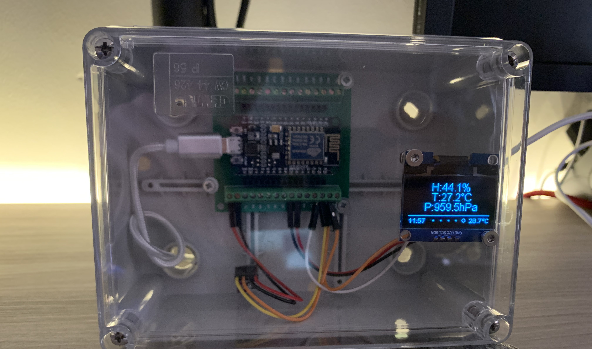

Desk WeatherStation
Desk WeatherStation with esp8266, 1,3" oled display, GY-BME280 sensor and Python-Flask web application for data visualization.

Pin Connections
| NodeMCU ESP8266 | OLED Display |
|---|---|
| 3.3V | VCC |
| GND | GND |
| D1 | SCL |
| D2 | SDA |
| NodeMCU ESP8266 | BME280 |
|---|---|
| 3.3V | VCC |
| GND | GND |
| D1 | SCL |
| D2 | SDA |

Esp8266 Code Description
For the project I used this KeeYees kit that can be purchased at this link: https://www.amazon.it/KeeYees-GY-BME280-Atmosferica-Temperatura-Breadboard/dp/B07T2H5QXC/ref=sr_1_12?__mk_it_IT=ÅMÅŽÕÑ&dchild=1&keywords=keeyees&qid=1624183225&sr=8-12
I also used the terminal adapter for esp8266: https://www.amazon.it/KeeYees-Espansione-ESP8266-ESP-12E-Sviluppo/dp/B08HYZ4Y69/ref=sr_1_5?__mk_it_IT=ÅMÅŽÕÑ&dchild=1&keywords=scheda+di+espansione+esp8266&qid=1625037621&sr=8-5
The arduino code is the same as provided by the KeeYees demo except for a function that I inserted in the code that allows you to send the bme sensor data to the Python web application. Below the function:

Python Web Application Description
The python web application with Flask allows you to view the latest BME sensor data sent by esp8266 and the graphs (with the Plotly library) that show the trend of temperature, humidity and atmospheric pressure over time. The data is saved on the MySQL DB. I have deployed my application (also the DB) on pythonanywhere.
Demo